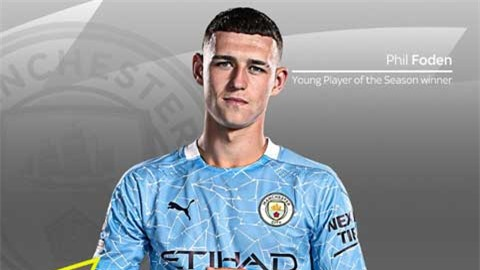
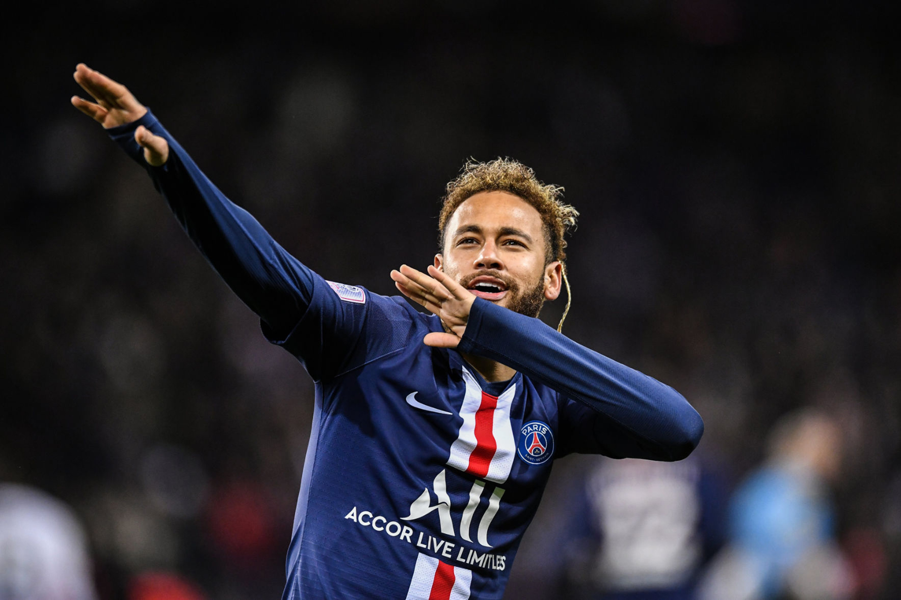
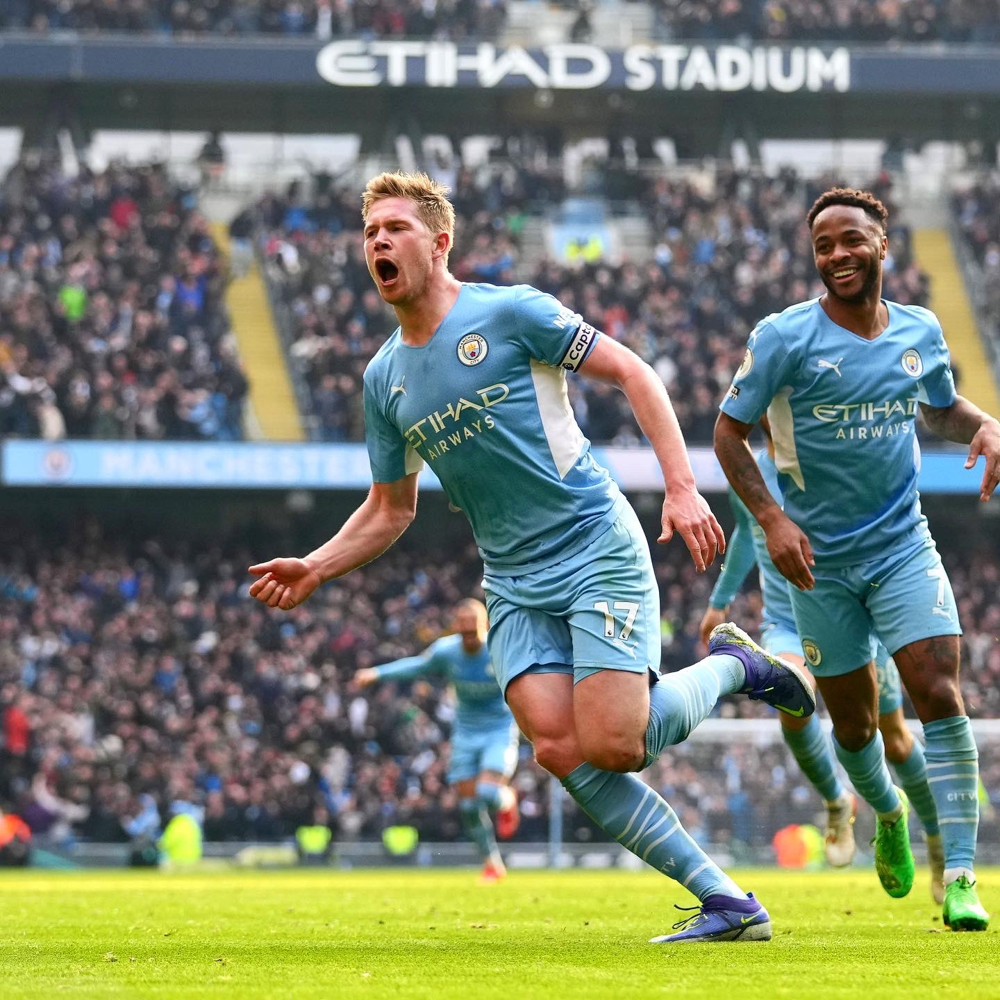
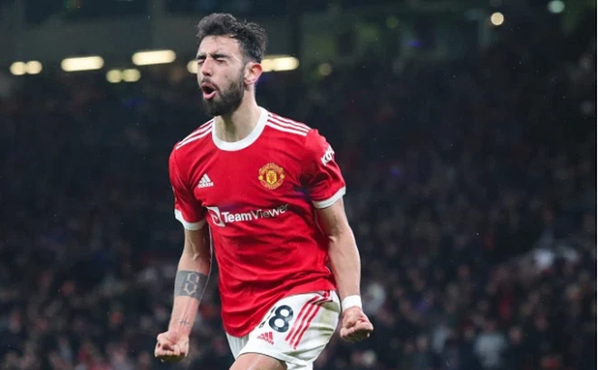
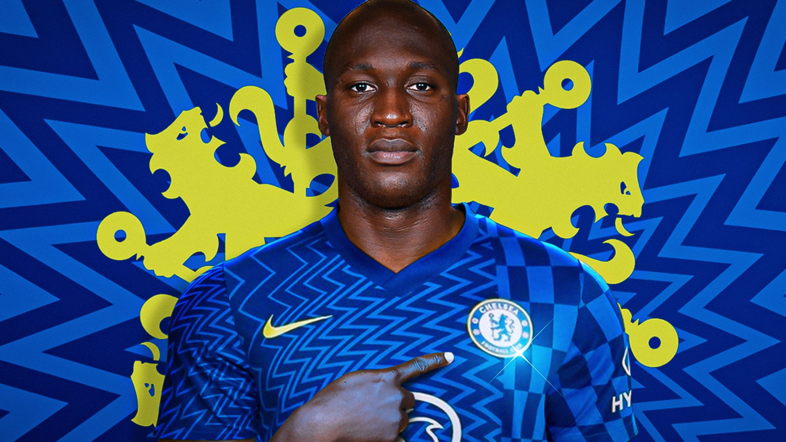
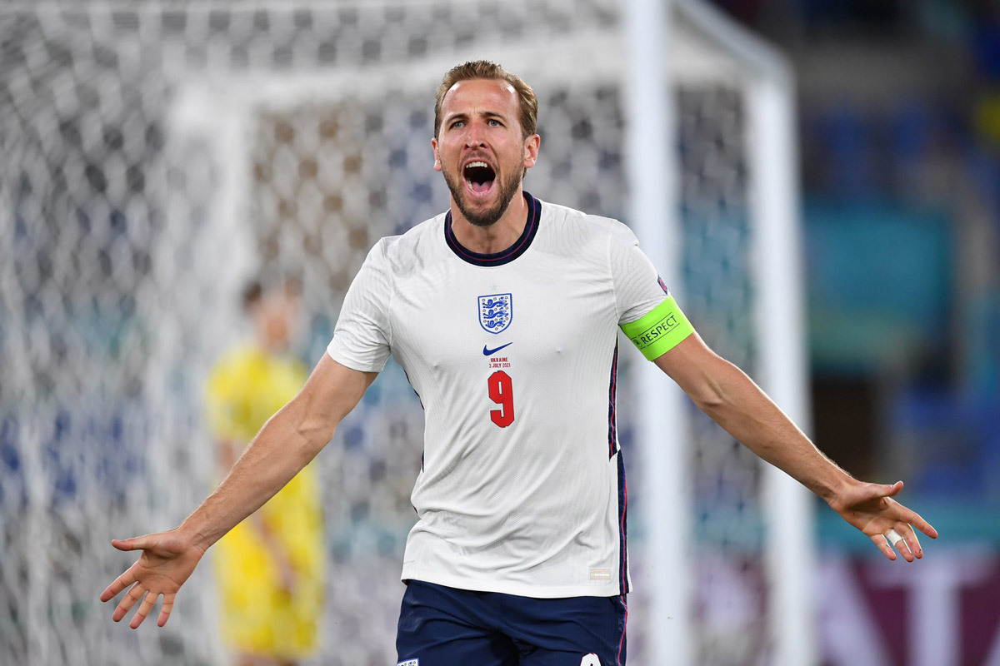
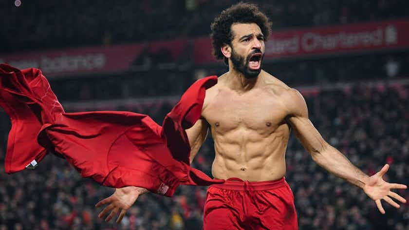
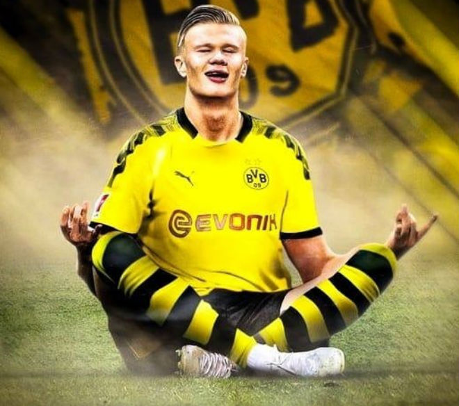
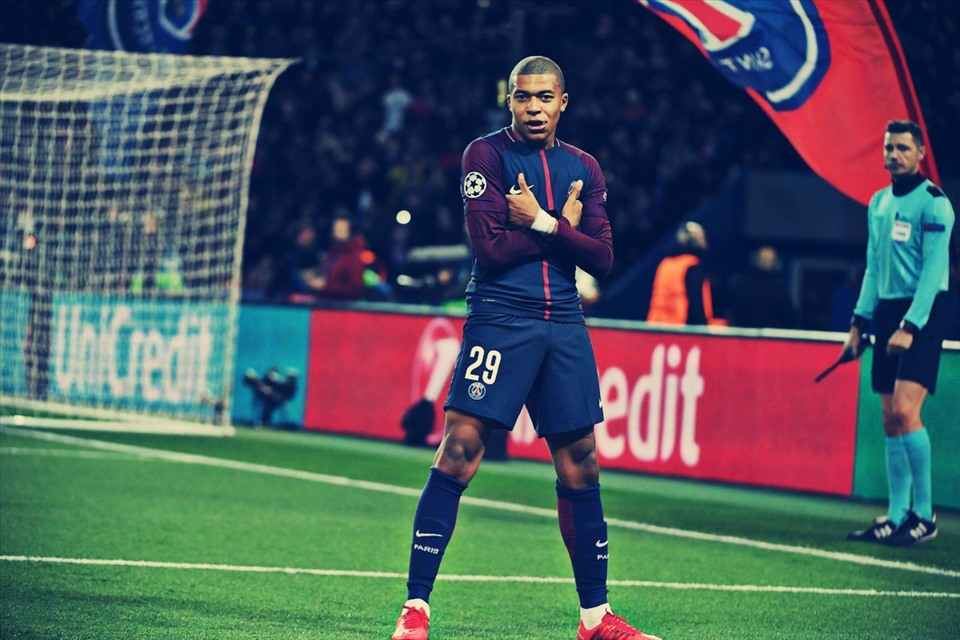

Những cầu thủ được định giá cao nhất thế giới theo trang Transfermarkt
Đi đến bảng thống kê
10.Philip Walter Foden (sinh ngày 28 tháng 5 năm 2000 tại Stockport,Anh)

9.Neymar da Silva Santos Júnior (sinh ngày 5 tháng 2 năm 1992 tại Mogi das Cruzes, Brasil)

8.Kevin De Bruyne (sinh ngày 28 tháng 6, 1991 (30 tuổi), Drongen, Gent, Bỉ)

7.Bruno Miguel Borges Fernandes (sinh ngày 8 tháng 9, 1994 (27 tuổi), Maia, Bồ Đào Nha)

6.Romelu Menama Lukaku Bolingoli (sinh ngày 13 tháng 5, 1993 (28 tuổi), Antwerpen, Bỉ)

5.Harry Edward Kane MBE (sinh ngày 28 tháng 7, 1993 (28 tuổi), Walthamstow, Vương Quốc Anh)

4.Mohamed Salah Ghaly (sinh ngày 15 tháng 6, 1992 (29 tuổi), Nagrig, Ai Cập)

3.Vinícius José Paixão de Oliveira Júnior (sinh ngày 12 tháng 7, 2000 (21 tuổi), São Gonçalo, Rio de Janeiro, Brasil)

2.Erling Braut Haaland (sinh ngày 21 tháng 7, 2000 (21 tuổi), Leeds, Vương Quốc Anh)

1.Kylian Mbappé Lottin (sinh ngày 20 tháng 12, 1998 (23 tuổi), Quận 19, Pa ri, Pháp)

Danh Sách Thống kê
| Số Thứ Tự |
Tên Cầu thủ |
Câu lạc bộ |
Giá trị chuyển nhượng |
| 1 |
Mbappe |
Paris Saint-Germain |
160 triệu Euro |
| 2 |
Erling Haaland |
Borussia Dortmund |
150 triệu Euro |
| 3 |
Vinicius Junior |
Real Madrid |
100 triệu Euro |
| 4 |
Mohamed Salah |
Liverpool |
100 triệu Euro |
| 5 |
Harry Kane |
Tottenham Hotspur |
100 triệu Euro |
| 6 |
Romelu Lukaku |
Chealsea |
100 triệu Euro |
| 7 |
Bruno Fernandes |
Manchester United |
90 triệu Euro |
| 8 |
Kevin De Bruyne |
MANCITY |
90 triệu Euro |
| 9 |
Neymar |
Paris Saint-Germain |
90 triệu Euro |
| 10 |
Foden |
MANCITY |
85 triệu Euro |